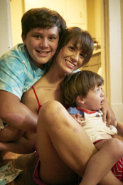

My sons, Ethan and Luke
My boys are with me wherever we go. There is rarely a dull moment. I have the best friends I could have. I am usually found at home caring for my youngest. He had health problems that we are continually staying positive and diligent to his care and needs. But that doesn't stop us from doing the most in our life! Being a drive away from a beach is great! While tanning at the beach, my boys are enjoying the ocean. We try to find our own fun. Hiking or playing at a park with Max. My oldest is doing well in school and is finding success in art. Seeing him grow up being his own person and spreading his joy, is my way of success. My youngest always brings others to smile and his playful imagination inspires me to look at the world around us as brighter and awe-inspiring.